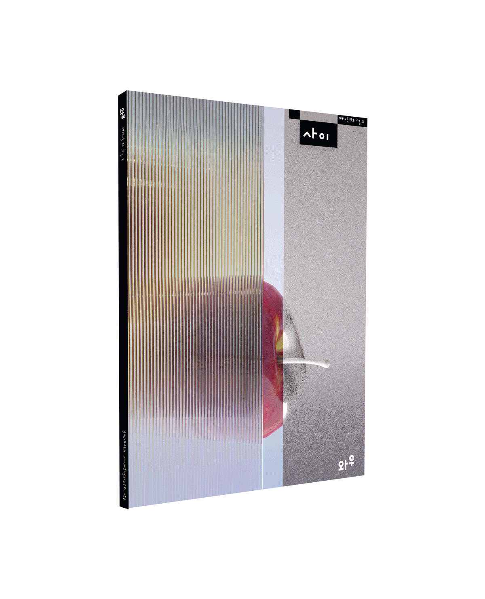

Education
2023- present Hongik University, Fine Arts Visual Design Communication
2026.02-2026.07 Exchange program at Design Academy Eindhoven
Experiences
2025.11 Korea Japan International Exchange Art Exhibition
2024.06-2026.03 Designer of Magazine WOW